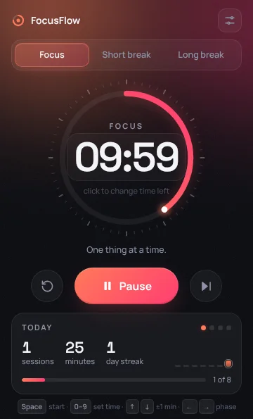
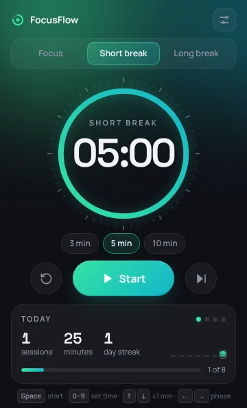

FocusFlow is a calm Pomodoro timer that lives in your toolbar. Work in focused sprints, get nudged to take breaks, and watch your daily progress grow.


Short focused sprints with regular breaks beat long, tired marathons.
Built with plain Manifest V3 APIs, so it is tiny and fast.
Runs in the background with chrome.alarms, even when the popup is closed.
Desktop notifications with a one-click "Start break" button and a soft chime.
While you focus, a yellow lightning bolt lights up next to the logo and strikes every few seconds. The toolbar badge counts down the minutes left.
Sessions, focus minutes, day streak, a 7-day chart and a daily goal.
Click the clock and type 40 or 12:30, or tap a preset. Works mid-session too.
Space start/pause, digits set the time, ↑↓ ±1 min, ←→ switch phase, Alt+Shift+P from any tab.
FocusFlow isn't on the Chrome Web Store yet, so you load it as an unpacked extension.
focusflow-extension.chrome://extensions in Chrome (or Edge, Brave, Arc).focusflow-extension folder.